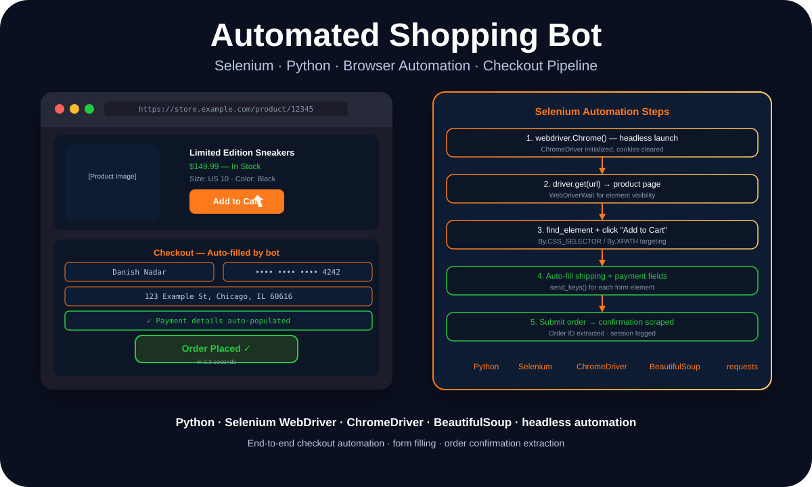

Automation · Python · Browser Engineering
Automated Shopping Bot: Selenium, Checkout Flows, and Learning Browser Automation

Danish Nadar
AI Engineer · Illinois Institute of Technology
Building a bot that completes real e-commerce checkout flows is a lesson in how fragile web UIs actually are — and how to write automation that handles it anyway.

Selenium automation pipeline — browser launch, product page, cart, checkout
Why browser automation is harder than it looks
The basic Selenium tutorial makes browser automation look simple: find an element, click it, fill in a form, submit. What the tutorial doesn't show you is what happens when the element isn't loaded yet, when the selector changes between page loads, when the site adds anti-bot measures, or when a dynamic React component renders after a delay.
E-commerce checkout flows are especially difficult because they're multi-step, state-dependent, and often built by teams that are actively trying to prevent automation. Every step — product page, cart, shipping form, payment form, order confirmation — has its own timing requirements and its own failure modes.
Building the shopping bot was essentially a course in defensive automation: write selectors that degrade gracefully, build wait conditions that match actual page behavior, and design the session management to recover from partial failures without corrupting state.
The technical architecture
The bot takes a product URL as input. ChromeDriver launches a headless browser session and navigates to the product page. WebDriverWait with expected conditions handles loading states — instead of fixed sleep() calls, the bot waits for specific elements to become clickable or visible before proceeding. Fixed sleeps are the root cause of most automation fragility.
Product selection (size, color, quantity) uses a combination of CSS selectors and XPath expressions. CSS selectors are preferred where possible — they're faster and more readable. XPath is reserved for situations where the element relationship can't be expressed cleanly in CSS.
The checkout form-filling logic uses send_keys() for each field, with explicit waits between fields to allow for any validation or dynamic updates. The shipping and payment data is stored in a configuration file, not hardcoded — making it easy to update without touching the automation logic.
What this project taught me about testing and reliability
Browser automation has a lot in common with integration testing — both require interacting with real systems through their actual interfaces, and both are sensitive to changes in those interfaces. The skills transfer directly: writing robust Selenium automation is good practice for writing robust integration tests.
The reliability mindset that the shopping bot required — always handle the case where an element isn't there, always verify state before acting, always log what happened — is the same mindset I apply to system automation in professional contexts. The tools are different. The thinking is the same.
Stack
Python · Selenium WebDriver · ChromeDriver · BeautifulSoup · requests
Core skill
Defensive automation — explicit waits, graceful selector degradation, and state verification before every action.